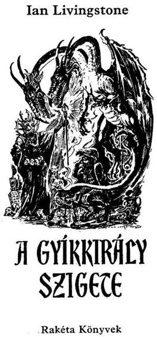
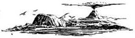
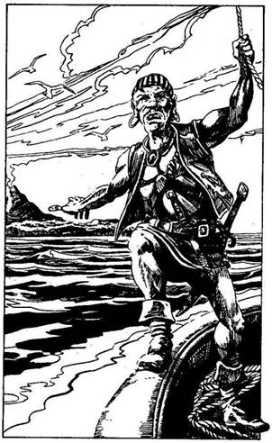

A mű eredeti címe:
Island of the Lizard King
Alan Langford illusztrációival
Fordította:
Varsányi Mária
© Ian Livingstone, 1984
Hungarian translation Varsányi Mária, 1989
Háttértörténet
Az Osztriga-öböl nyugodt kis halászfalu úgy harminc kilométernyire a hírhedt Feketehomok Kikötőtől délre, a tengerpart mentén. Mivel ez a hely egy hosszú félsziget végében található, melyet csupán egy meredek, kanyargós ösvényen lehet elérni, a halászok és asszonyaik arra kényszerültek, hogy az egyszerű emberek életét éljék itt, távol az ország szörnyekkel és varázslatokkal teli életétől.
Fangtól déli irányban elindulva úgy döntesz, hogy néhány napos pihenőt tartasz, és mivel nem ismersz nyugalmasabb helyet az Osztriga-öbölnél, lovadat gyorsabb ügetésre ösztökéled a part mentén.
A faluban lakik régi barátod, Mungo, akit évek óta nem láttál. Két nap múlva egy sziklaszirthez érsz, ahonnan rálátni az Osztriga-öbölre. Gyönyörű, napfényes reggel van, körös-körül minden nyugodt. Azóta, hogy utoljára itt jártál, semmi sem változott. A kőházak kis csoportja a sziklák lába és a móló közé ágyazódott be, ahol tucatnyi halászhajó ring a vízen. Leszállsz a lovadról, elindulsz a kanyargós ösvényen, le a faluba. Először síró asszonyokkal találkozol. Amint közelebb akarsz menni hozzájuk, férfiak ugranak elő a házakból, és feléd tartanak. Egyikük régi jó barátod, Mungo. Széltől cserzett arca haragos. Meglepetten néz rád, de nem köszönt. Elmeséli, milyen szomorúság érte a faluját.
Mivel nincs aranyuk, sem egyéb kincsük, az Osztriga-öböl lakói soha nem érdekelték igazán a külső támadókat. Néhány hete azonban, amikor a férfiak kint voltak a vízen, a Tűzszigeti Gyíkemberek zsákmányul ejtették néhány hajójukat, és több fiatalembert elraboltak. Mungo szerint a foglyok biztosan a Tűz-szigeten raboskodnak, és vasra verve dolgoznak az aranybányában. Az emberrablás óta két ember őrködik a faluban, míg a többiek halásznak. Ennek ellenére a Gyíkemberek ma reggel ismét támadtak, lefegyverezték az őröket, és magukkal vittek még egy csapat fiatalembert. Mungo közli veled, hogy nekivág a tengernek, egyedül megy a Tűz-szigetre, mivel a többiek félnek. Némán figyel, hogy vele tartasz. Hátba vereget, és hálája jeléül kezet ráz veled. A szegény halászfalu lakói egy pillanatra elfelejtik a bánatukat, és köréd sereglenek, hogy köszönetet mondjanak neked. Mungo ezután meghív, hogy vacsorázz vele, és pihenj egy keveset, mert az út a Tűz-szigetre órákig tar majd. A fenséges lakoma közben, ahol főtt homárt és salátát szolgálnak fel nektek, megbeszélitek a haditervet.
Mungo elmondja, nem hiszi, hogy laknának emberek a Tűz-szigeten, bár ismeretei elég hiányosak. Amit tud, az mind a partvidék többi településének halászai között terjengő szóbeszéd. Azt is tudni vélik, hogy a Tűz-sziget annak idején börtönsziget volt, amelyet fizetett Gyíkemberek őriztek. Az Olaf herceg eléggé hiábavaló kísérlete volt annak érdekében, hogy megszabadítsa országát a nemkívánatos elemektől. A jó herceg azonban hamarosan rájött, hogy egyszerűbb lenne áttelepíteni hűséges alattvalóit a Tűz-szigetre, és a szárazföldön hagyni a gazembereket - ugyanis túl sok volt belőlük. Feladta hát eredeti tervét, és felszámolta a börtöntelepet. Amikor a Gyíkemberek nem kaptak fizetést, bosszút álltak a foglyokon, és a sziget egy királynak kikiáltott Gyíkember-börtönőr rémuralma alá került. A foglyoknak megparancsolták, hogy kutassanak arany után a föld mélyében a Gyíkkirály számára. Éheztették őket, és kegyetlenül bántak velük. Sokan közülük meghaltak, és ez lehet az oka, hogy a Gyíkkirály most újabb rabszolgák után küldi az embereit. Tudni vélik azt is, hogy a király, hatalmát megerősítendő, voodoo-val (törzsi varázslatokkal) és fekete mágiával kezdett foglalkozni. Genetikai kísérleteket is folytat, hogy kifejlesszen egy új Gyíkember-fajt, amely legyőzhetetlen lesz. A legtöbb kísérlet azonban balul sült el. Torzszülöttek láttak napvilágot, és veszélyes folyadékok kerültek a csatornarendszerbe. Ez rettenetes következményekkel járt. A sziget növényzete és állatvilága megváltozott: emberevő növények és óriás szörnyek fejlődtek ki. Néhány fogolynak sikerült tutajon elmenekülnie a szigetről - ezeket a halászok mentették meg és vitték ki a szárazföldre. De hogy mi történt az elmúlt néhány és során, azt senki sem tudja. A minapi támadásokig a Tűz-szigetről már-már meg is feledkeztek. Kétséges, hogy sikerül-e megölnöd a Gyíkkirályt és megmentened az elrabolt áldozatokat, de meg kell próbálnod a lehetetlent.
Felállsz, és lesétálsz Mungóval a kikötőbe, ahol beszálltok barátod kis halászbárkájába. Eloldod a csónakot, és az éljenző tömeget nézve azon gondolkozol, vajon visszatérsz-e ide valaha is?
És most lapozz az 1-re!

